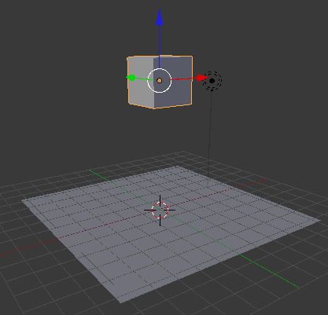
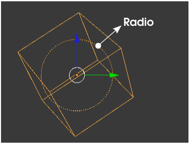
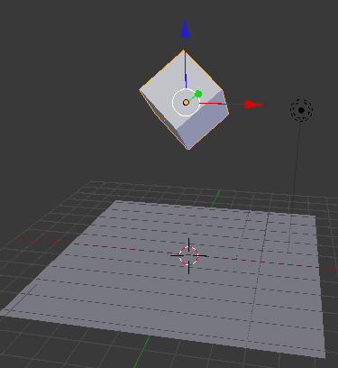
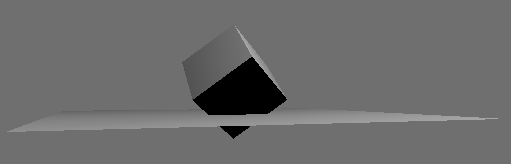
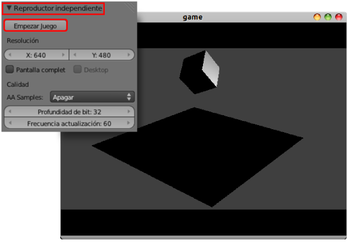

Físicas y Cuerpo rígido
No esperemos más y veamos nuestra primera simulación en acción.
A la escena inicial le sacamos un plano (Añadir/Malla/Plano) además de dejar el cubo por defecto. Colocamos el cubo a una distancia razonable del plano.

Y ponemos en marcha el juego; o lo que es lo mismo, activamos el motor de juego, desde el panel Render  pulsando el botón Empezar juego de la botonera Reproductor incorporado (no Reproductor independiente), aunque recomendamos el atajo "P" desde Modo Objeto
pulsando el botón Empezar juego de la botonera Reproductor incorporado (no Reproductor independiente), aunque recomendamos el atajo "P" desde Modo Objeto  .
.
Nada ocurre, salvo que el editor Vista 3D cambia de apariencia a una especie de render. Salimos del juego con la tecla "Esc" y todo vuelve a la normalidad. ¿qué ha ocurrido?. Exactamente lo que tiene que pasar: nada. Los dos objetos que forman parte de la animación (sin contar la lámpara y la cámara) son cuerpos de tipo Estático y por lo tanto es como su hubiéramos activado la simulación en una habitación con un suelo y una mesa; nada se mueve.
Pero estamos de acuerdo en que el cubo está en el aire y según la lógica debería caer atraído hacia el plano gracias a la fuerza de la gravedad.
Nos vamos al panel Físicas  y en la botonera del mismo nombre cambiamos de Estático a Cuerpo rígido.
y en la botonera del mismo nombre cambiamos de Estático a Cuerpo rígido.
Con el puntero del ratón sobre el editor Vista 3D (en Modo Objeto  , no lo olvidemos) ponemos en marcha la simulación ("P"). El cubo cae. Las físicas se ponen de manifiesto. Ya hemos hecho nuestra primera simulación.
, no lo olvidemos) ponemos en marcha la simulación ("P"). El cubo cae. Las físicas se ponen de manifiesto. Ya hemos hecho nuestra primera simulación.
Primeras conclusiones
- Estemos en sombreado Sólido o en sombreado Textura la iluminación no es global sino que depende exclusivamente de las lámparas de la escena. El sombreado Textura hace visibles los mapeados UV (si los hubiera) pero algunas ayudas visuales como el Atributo: Radio sólo se ven con sombreado Sólido a Alambre

- La simulación la vemos desde el punto de vista dónde estemos trabajando, pero cuando llegue el momento la simulación debe ser encuadrada desde la cámara.
- Estas recreaciones no son cuestión de activar un par de casillas; un buen resultado depende de variar y probar un buen número de veces con distintas configuraciones.
Pero vamos a hacer algunos cambios. Lo primero es rotar ("R") el cubo para que no caiga con una cara paralela a la del plano del suelo.
Lo que era una simulación ("P") más o menos aceptable a pasado a ser un desastre; el cubo se queda clavado al plano (incluso lo atraviesa ligeramente) y no tiende a posarse sobre una de sus caras.

Comenzamos por activar la opción Límites de colisión en la botonera del mismo nombre del panel  y nos quedamos con la opción Límites: Caja que es perfecta para el objeto con el que estamos trabajando.
y nos quedamos con la opción Límites: Caja que es perfecta para el objeto con el que estamos trabajando.
Con esto Blender determina una superficie virtual que envuelve a la malla. La simulación ("P") gana calidad: el cubo ya no atraviesa al plano y además se mueve de modo realista hasta posarse sobre una de sus caras.
Reproductor independiente
Lo primero que debemos saber de esta reproducción es que se toma la cámara como punto de vista.
Si reproducimos con Empezar juego de la botonera Reproductor independiente, Blender nos mostrará la simulación en una ventana emergente. Esta reproducción es una imitación exacta de cómo se verá cuando fabriquemos el autoejecutable que nos permite reproducir nuestro trabajo sin estar ejecutando Blender; incluso en un ordenador donde el programa no está ni siquiera instalado.
En nuestro ejemplo el cubo viene con un material asignado porque es el cubo que pone Blender en la escena por defecto. Pero el plano lo hemos añadido sin más y carece de material. En este Reproductor independiente comprobamos cómo los objetos que no tienen asignado un material aparecen completamente negros.